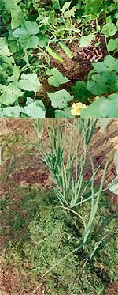
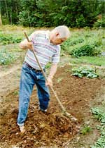
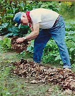
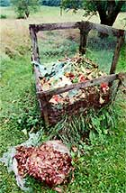
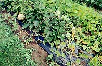

Priceless... And Free
June/July 1998
Garden and Yard
Mulching a Vegetable Garden.
by Mort Mather
Mulch, as a verb, is the act of applying some covering to the soil, usually for the purpose of controlling weeds. As a noun, it is any material that will serve the purpose. If that sounds like a very broad range of materials, it is. I have used mulches that were living and dead and ranged from dust to oil. What they all accomplished-with any luck-was:
Controlling Weeds. I can't think of a mulch that doesn't do this if used properly. When I first heard of clear plastic being used as a mulch, I questioned how it would control weeds. After all, I used clear plastic to help plants that needed heat to grow. Clear plastic used as a mulch works to kill weeds by cooking them when the sun comes out. Some weeds may get started in cool cloudy weather, but one sunny day will shrivel them in a hurry. Unfortunately, I didn't learn this by using a clear plastic mulch. I learned it when, one sunny morning, I got to the garden a little late to open the plastic row covers over my eggplant and pepper seedlings. Baked seedlings were a sad lesson but one not soon forgotten. I paid for my laziness that year and didn't use plastic row covers for several years after that. Then I found slitted row covers which open up to release excess heat without my attention.
Retaining Moisture. All of the mulches I'm going to discuss retain moisture with the arguable exception of a living mulch. A living mulch like clover will draw moisture from the sod for its own growth and some of the moisture drawn by the plants will be lost to the atmosphere through the leaves. On the other hand, a carpet of leaves on low-growing plants that catches morning dew and holds a cushion of air beneath it may snake up for the moisture it uses. By cushion of air I mean that low-growing plants, such as clover grown between rows of corn, will shelter the soil surface from drying breezes and from the baking sun. Whether or not the beneficial influence offsets the moisture used is something for scientists to investigate.
All mulches, except dust, inhibit rainfall or irrigation from above from reaching the soil. For this reason, it is best to mulch a soil that is already moist. Here in New England, the spring soil is usually moist. There has been a time or two when I held back on mulching and waited for rain. Once an impervious mulch like plastic is put down, there is no chance of additional moisture reaching that soil in any quantity. It amazes me when I check the condition of soil under a plastic mulch in mid or late summer and find it moist below the top half inch. Where are the plants getting sufficient water to fill out eggplant and tomatoes? The roots have probably extended beyond the plastic, but still, the soil under the plastic has received no additional moisture since the end of May.
Fertilizing . All organic mulches do this. Grass clippings provide nutrients more quickly than other organic mulches. Sawdust is at the other end of the scale, as it will require nitrogen from a source outside itself to break down into usable nutrients and humus. When we put sawdust in contact with the soil, the sod organisms recognize a big job ahead and they multiply rapidly. To multiply, they need nitrogen. Since it is not available in the sawdust, they use nitrogen that is already in the soil. If the nitrogen supply in the soil is insufficient, the sawdust is converted more slowly. Of greater importance, the soil is deficient in nitrogen for the plants and they will suffer.
The most important thing to keep in mind regarding soil fertility and mulch is the carbon-nitrogen ratio. The carbon-nitrogen ratio of sawdust is 400:1, for example, while young sweet clover is 12:1. An average bale of hay might be 80:1, while rotted manure might be 20:1. A substance that has a C:N ratio below 17:1 will actually add nitrogen to the soil while a ratio above 33:1 will take nitrogen from the soil. Between those two figures the result is neutral. Grass clippings might have a ratio of 16:1 but if the plant is allowed to grow to maturity, the ratio might go to 30:1 or 40:1. If the plant starts to dry, the ratio goes up even more. Once dried as hay the ratio will be in the vicinity of 80:1.
There is one other factor to keep in mind regarding the C:N ratio. If the material is just going to be used as a mulch, the amount of interface with the soil is limited to the soil surface. It is when a high C:N ratio material is incorporated into the soil that the temporary loss of nitrogen can become severe. You may use a sawdust mulch on a section of the garden one year and have no problems. If you turn it under the next year, you want to stake sure to incorporate some additional nitrogen at the same time.
Materials from trees have the potential for lowering the pH of the soil-making it more acidic. Leaves, sawdust, and wood shavings are acidic. However, in the process of becoming humus, they move toward a higher pH. Also, it seems the more humus in the soil, the wider the band on the pH scale that is acceptable to plants. (See MOTHER x166 for more on sod fertility.)
Warming/Cooling the Soil. Clear or black plastic mulch will warm the soil more quickly in the spring and hold the warmth over night. In my climate, that makes a tremendous difference with eggplant and melons and usually a noticeable difference with peppers and tomatoes. Organic mulches insulate the soil. Mulching crops that prefer a cool soil like lettuce, peas, and spinach can lengthen the harvest period or improve the harvest.
Keeping Plants off the Ground. A tomato plant can be allowed to sprawl on a cushion of heavy straw, grass, or hay mulch and the fruit will not be the worse for the contact. If the same tomato is allowed to rest on the bare ground, wire worms or some other soil critters may damage the fruit. Melons will also benefit from this technique.
Keeping Plants Clean. Lettuce and celery are especially prone to getting soil splashed all over them. Not so when they are mulched with something other than a dust mulch.
Controlling Erosion. While we are picturing the rain drops splashing the sod up on our clean plants just before we harvest them, let's think about the soil. Those rain drops are falling hard on the soil and if enough of them fall and there is any slope to the garden, they will start to flow. That will cause erosion. Mulch can stop erosion on any slope.
Making the Garden Attractive. Beauty is clearly in the eye of the beholder. I think a mulched garden is beautiful. We need some spaces in the garden for ourselves, and I like to have my walkways covered with mulch. There are also spaces into which plants haven't grown yet which simply look better with a tittle covering. Call me a prude, but I think the winter squash patch looks better covered with mulch than showing bare exposed soil.
Controlling Insects . Have I ever mentioned that I think the best way to control of insects in a garden is to grow healthy plants in a healthy soil? Organic mulch goes does much for the soil by providing plants with humus. The plants are also healthier with a steady supply of moisture available as needed. I have seen claims that mulch interrupts the life-cycle of some insects. That may be true, but I have not seen any evidence of it. To be fair, I have not looked. I'm convinced that anything good that happens is simply the result of a healthy growing environment.
Preparing Soil for Planting. An organic mulch can also be used to prepare sod for planting the next year. Spreading it over the sod will smother the plants underneath, making it easier to turn the soil a year later. You'll be pleased next planting season by sod that is soft, friable, and easy to work.
Which Mulch is Best
I'm going to start with the dead organic mulches fast. This is the biggest category, the most common, the best for most things, and the most likely to be the least expensive.
I have heard several stories of people who have been able to get the municipal road crew to deliver leaves and/or grass clippings. If you live in a place where the municipality collects leaves and your garden is as close or closer than the place they are planning to dump them, there is a good chance you can get in on this free delivery service.
Lawn-care people may also deliver for you, but there are some things to watch out for. Sometimes the leaves or grass clippings come with unwanted materials.
I have several bags of leaves next to the garden right now that have enough gravel in them to make a path. I could actually use the gravel, but separating the two is a task that I have not found the time to do yet. I'm fond of saying that time is a function of desire.
The other cautionary note involves grass clippings. Lawns receive more chemicals than agricultural fields-wonderful (he says sarcastically) mixtures of all-purpose concoctions that will make the lawn green, kill certain kinds of "unwanted" grasses, kill broad-leaf plants, and kill insects. I'm not going to go into why that is a bad idea. It would take another article. Besides, if everyone agreed with me on lawn care there wouldn't be any grass clippings for gardens. What we are concerned with is keeping those chemicals out of the garden, off our hands and clothes, and out of our house. If you are dealing with reasonable lawn care people, they may be happy to tell you when the lawn was last treated. After all, there are broad-leaf plants in the garden and you wouldn't want to unknowingly introduce a herbicide designed to kill such plants into the garden. They would understand that reasoning better than telling them, "I hate chemicals."
If you can't get free home delivery, you can probably find a good neighbor hood for collecting bagged leaves and clippings. I always ask before collecting. Even if bags are at curbside, it is possible they are there waiting for another gardener. Besides, talking to someone who is bagging mulch for you may be the beginning of a treasure trove. They may be willing to call you when they have some good stuff and they are likely to keep the bags more pure. You might want to heft the bags just to check the weight before asking for them. If I had an opportunity to do that with the leaves and gravel I have now, I would have avoided a job.
Mast organic mulch is easy to use. The finer materials, such as clippings and leaves, are the easiest to use. Just spread or place them with your hands where you want them, between four and eight inches thick. The thickness depends on the coarseness of the material. Sawdust will smother weeds at a couple of inches, leaves three to four, grass clippings four to six, hay or straw eight inches. If the materials are too coarse (such as corn stalks or sugar cane) they should be shredded to make a good mulch or mixed with other mulch materials. Don't obsess over the thickness of the mulch. You are unlikely to use too much, and if you use too little you will know when the weeds poke through it. If that happens, just drop some more on top of the impertinent weeds.
I generally have a variety of materials and I use them in different places. The coarsest materials are easiest to spread in large areas like the squash patch, between the corn rows, and on the walkways. My favorite material is freshly cut grass clippings that will go right where you put them and stay there.
Grass clippings are so easy to use that when I started market gardening, the only motorized vehicle I bought was a riding mower and grass collector. Instead of driving equipment around in the garden, I drove around on sod and collected grass clippings. I had twenty rows 100 feet long of carrots, all mulched with grass clippings. I doubt that anyone has done that before. It really wasn't much work. They were all mulched before the radishes that were planted with them got their first we leaves. When I harvested the radishes I did a little in-row weeding, and that was the end of the care of those carrots until harvest. If I ever have another market garden, I will do it the same way. Some enterprising soul could develop a machine that cuts the grass and deposits it as mulch in adjacent rows.
Bark and wood chips are popular mulches around ornamentals and shrubs. These plantings do well in an acidic soil so there is no concern about the wood products making the soil too acid. Wood products break down more slowly and thus provide less nutritive value to the soil. As a barefoot gardener, I prefer a mulch that feels good underfoot. This is my particular reason for not using them.
Wood shavings and sawdust are sometimes used as bedding for animals and come mixed with manure. The manure has nitrogen that improves the carbon-nitrogen ratio. Manure by itself or in combination with other materials is generally not used as a mulch. If you put it on thickly enough to smother weeds, it will likely be too rich for the soil. The combination of manure and straw, may be a good growing medium for plants and while smothering seeds in the soil, seeds in the manure mix will geminate.
The list of possible dead organic materials is long: potato peelings, buckwheat hulls, peanut shells, egg shells, lobster shells, feathers, hair, grapefruit skins, leather scraps, pea pods, pine needles, prune pits, and on and on. While some of these are exotic to most of us, they are an easily obtained waste product for others.
There is one other that is readily available to just about anyone. It is different from the those mentioned so far because it is a processed organic material. Newspaper is a wood product. It performs well as a mulch in all aspects of other organic mulches except that it has limited nutrient value and it doesn't look, in my opinion, as nice as natural organic materials. I have read nothing that leads me to believe it should not be used. The paper is OK and the ink will not create problems in the soil or be taken up by the plants. The best way to use newspapers is probably to put them down on the sod first, several pages thick, and cover them with a light natural mulch to hide them. This will make it possible to stretch your natural mulch farther if it is in short supply.
I have been making a distinction for dead organic mulch because a living mulch is also providing organic material for the soil. Living mulches work best, I think, for crops like corn that will grow tall and not have to compete with the mulch for sunlight. Vine crops will also do well as they will grow above the living mulch. I have two favorite living mulches. Clover is a legume and will actually add nitrogen to the soil. It is also low-growing and spreads out over the surface of the soil, blanketing it easily. It seems like a natural for growing in corn as the corn is a heavy nitrogen feeder.
The other favorite living mulch is weeds. Nice strong-stemmed weeds like lambs quarters will support tomato and squash vines, keeping the fruit off the ground. AS they grow along with the crop, they keep the ground covered from early in the season. They grow the structure to support my plants. After my experience last summer, which I'll get into in a minute, I am not sure I will use this method again.
A dust mulch is the simplest but it also provides the fewest positive results. Dust mulch will help the soil retain moisture. control weeds and, perhaps, insulate the soil slightly from temperature fluctuations. Dust is not applied. It is created by cultivating the surface shallowly. By loosening the soil on the surface, air spaces are created that inhibit the capillary action that draws moisture from below. Without the dust, the moisture on the surface evaporates and more moisture is sucked to the surface to be last to the air.
The "oil" I use as a mulch is in the form of plastic that is a petroleum product. I prefer black plastic, though I have been assured that clear plastic works just as well. Although plastic will do just about everything an organic mulch will do except add fertility, I use it for only one reason: to warn the soil. Even then, I only use it for corps that will not do well otherwise in my climate. I could get cucumber and squash earlier if I used plastic, but I am satisfied with the date and production of these crops. I usually mulch them with hay that can have a cooling effect but I don't mulch them until the plants are up and growing, and I mulch at the end of the day when the soil is warm.
Plastic gives me considerably letter yields of eggplant, melons, and tomatoes. 1 think it gives me better yields of peppers, and so I usually plant them in plastic but pepper yields seem to operate on some cosmic scale that baffles me.
Using plastic is fairly easy. I bought a roll years ago for the market garden and I'm still using it. You want to he sure to store plastic out of the sun, as sunlight deteriorates it. I start by hoeing a trench eight or so inches deep down the center of the row I plan to plant. I half fill the trench with compost and then fill it in and smooth the bed. My plastic is three feet wide but most sold now seems to be four. I dig a six or so inch deep trench on either side of the first trench about eight inches in from the edges of the plastic. Then the plastic is rolled out and the edges are tucked into the trenches and covered to keep the plastic from blowing away. Seedlings are transplanted through holes poked in the plastic. Be sure to remove the plastic as soon as the plants die in the fall. If left over winter, it is much more likely to deteriorate and become a problem. The best method I have found for removing it is to cut the plant sterns close to the soil line rather than trying to pull the plants or tear the plastic around them. Leaving the roots in the soil is a good idea anyway.
Solving Problems
If I were as fortunate as some and had no slugs or moles or mice, I would garden with a permanent mulch. I did for a couple of years and loved it. It wasn't quite as simple as that, because each year the garden got larger and I would have someone come to till the new ground. While they were here, I would have them till part of the old ground. There was always some tilled ground to he dealt with each spring it seems.
There were also the witch grass rhizomes that were in abundance then. Tilling was necessary to get that plant un der control. By mid-summer most of the garden had been mulched.
Slugs were a problem. There were whole families living in lettuce and cabbage plants. I could pull back mulch just about anywhere and find slugs. They did considerable damage to the pea vines one year and another year they wiped out my late planting of lettuce when it reached an inch in height. I used pans of beer, which do attract slugs, and various other control methods. However, I really didn't want to spend my life feeding slugs mulch so their populations could explode while also trying to kill them. The solution seemed to be less mulch.
I removed the dead organic mulch from the lettuce and cabbage. Lettuce hates to be crowded, so a living mulch would not work. A living mulch actually provides shade and moisture at ground level which slugs need. I wanted to create a desert between the slugs and my precious lettuce and cabbage. A dust mulch was the answer. That meant, though, that the lettuce would get dirty in a hard rain and that it wouldn't have the benefit of the cool stable soil temperature of mulch. It's a trade-off.
Potatoes can be planted right on top of the soil and covered with eight inches or so of hay. It works very well-most years. It is the other years, when the rodents find diem, that have caused me to change my method. Now I plant potatoes a couple of inches deep and mulch up around them as they grow rather than hilling. It doesn't matter if it is soil or mulch that protects them from the sun just so the sun doesn't touch the tubers.
Rats and mice have occasionally gotten into my carrots and potatoes in the fall. This usually happens after a section has been under mulch for a couple of years. when it becomes a problem, 1 usually till a major .section of the garden the following spring to disrupt their tunnels, nests, and to let them know this is not a good place to tell home.
Two years ago, moles became a serious problem. They are insectivores so 1 wasn't worried about the plants this time but rather about the earthworms which are at the core of my fertilization plan. I put up a vibrating windmill that was supposed to drive them away. It didn't. I put out traps, also to no avail.
Last spring, virtually any place in the garden where I pushed my hand into the soil, it would drop through a mole run. With all that air in the soil, it was quite possible roots would be affected. Worse, where a shovel would usually turn up a couple dozen worms, now there might be shovels-full of soil with no worms. I had two-thirds of the garden tilled. The mole runs that we see in our lawns and gardens are where they eat. Their homes are dug deeper, below the tines of the tiller.
I took up mulch in some places. I used a living mulch in the corn instead of hay, which I prefer. The moles left in early summer to aerate the front lawn. I don't think they left because of anything I did. I think they ate most of the worms and moved on in search of more food.
By fall the earthworm population was up to a respectable level again. The moles, however, have circumnavigated the house and are headed back toward the garden. I don't have the answer to this little problem yet. I'm thinking about a moat.
Using less dead organic mulch left more of the garden open for weeds to grow. I am going to be more careful about letting weeds go to seed in the garden. That is why I am probably not going to use a living mulch of weeds to support squash or tomatoes. Of course, if weeds get away from me to the squash or tomato patch, you can count on me to claim I planned it that way.
 Grass clippings are great mulch because they go where you want them... and stay there. |
 Vine crops take up alot of garden area in which weeds can flourish; just plant your mulch and forget it. |
 Cultivating every ten days will keep weeds at bay. |
|
 Leaves are an excellent mulch. Don't worry about their acidity. |
 Compost is one of the best mulches ever. |
 |